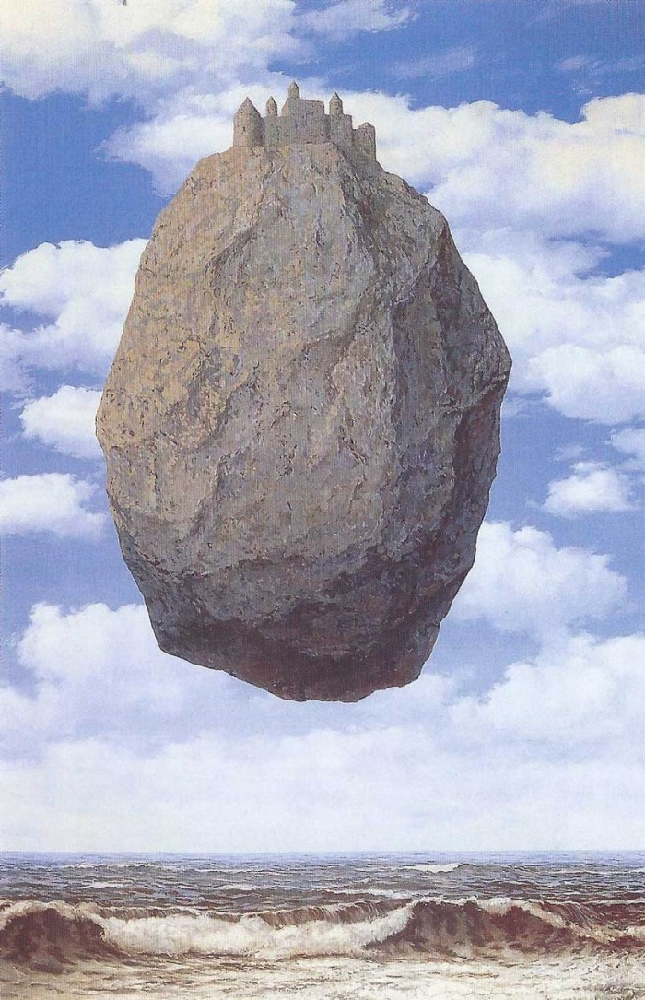
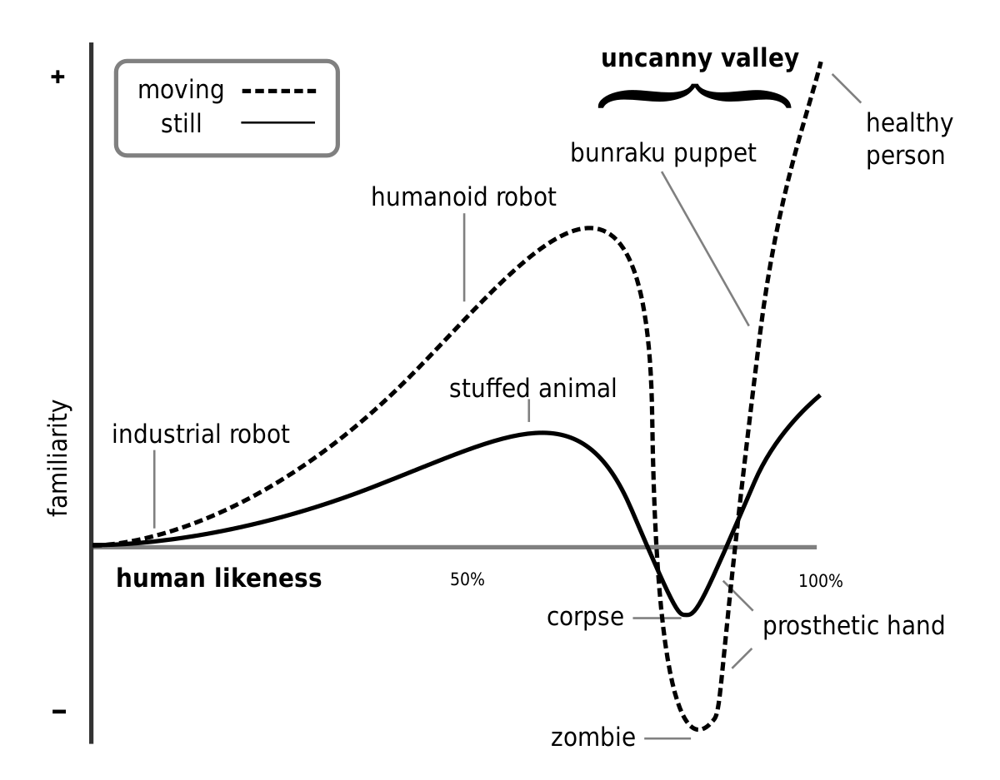

Abstract
This thesis explores the phenomenon of uncanny through the research of its norm in
philosophy and psychoanalysis in relation to its aesthetic expression. In doing so,
the unexpected possibility of uncanny as the tool for expanding our visual potential
will be inspected.
The anxious weirdness from unfamiliarity is a universal experience. We call it uncanny.
Everything is uncanny that ought to have remained secret and hidden but has come to light.[1]
This psychological norm comes from disorientation that is widely expressed through surreal
symbols in visual arts. Despite the attempt to be brought out on the surface of consciousness,
the uncanny is still considered as a marginalised area that cannot be verbally explained.
Existing notions around uncanny are mostly unpleasant or negative — its boundaries are uncertain.
I perceive it as the opened door that allows unplanned changes to come inside. My personal
vulnerability towards this inexplicable anxiety has been discussed in my visual language through
the metaphoric and symbolic images. It leads me to the curiosities on the origin of such uncanny mood,
its translation into visuals in popular cultures such as cinema and surrealism.
This thesis will follow the process to find the answer to the question: How does losing
direction in uncanny bring serendipitous discovery? I aim to form a positive expectation
of uncanny from the new perspective. The book ‘Heidegger on Being Uncanny’ and ‘The Uncanny’
will be the primary references to examine the conceptual uncanny, and ‘Man and His Symbols’ and ‘High Weirdness’
will be referred to uncanny aesthetics. The uncanny aesthetics and its visual potential will be examined through
the examples in surrealism paintings and scenography.
Introduction
The late spring in the year 2020 was weirdest period I could ever had. The streets I walk every day were empty, my friends became potential virus infectors. The weirdest part was my hands — I was being highly conscious of the most common part of my body. The pandemic has been continued for a couple of years. Our ordinary life has been threatened and the dramatic changes we’ve faced threw us into the enormous uncertainty that we even have no sense of when it will end. What we’ve felt was something more fundamental than just being afraid of losing your job or health. It was the unrealistic weirdness that comes from separation from the environments and the relationships we were familiar with.Although this planetary experience is something unusual, these emotions are universal. In life, there is a moment we are overwhelmed by unfamiliarity. This happens when we recognize that we actually don't know the essence of people, objects, and situations that we’ve thought we know. In this moment, the comfort replaces with sudden fear and such a moment breaks our reality as if we can never make our lives and our world fully familiar, fully meaningful. We are trapped in the maze of uncertain emotions. This weird experience has been defined as the term ‘uncanny’ in various studies from psychoanalysis to aesthetics. It appears to express that someone or something is not quite at home or at ease in the situation and the lack of orientation is attached to the uncanniness of things or incidents.[2]
Eernst Jentsch used the term for the first time in his essay ‘On the Psychology of the Uncanny’ and later Sigmund Freud(1856-1939) developed it as ‘the return of the repressed’, which means the process that oppressed elements in unconsciousness such as desire, emotions, and our memories tend to reappear through the conscious behaviors or thoughts. He insisted the uncanny brings anxiety because the act of repression converts any emotion to the anxiety alongside what is repressed.[3] In addition, Martin Heidegger(1917–1976) described uncanny as ‘how one feels’ in the mood of angst, and things that were familiar and homely become strange in this mood. In this mood of angst, things that were familiar and homely become strange and the world in which we make our home suddenly seems alien to us.[4] With these notions, uncanny has been regarded as something we are not willing to encounter but we have to.
Unfamiliarity, unease, unsettled, uncomforted, unhomeliness… There are plenty of words describing uncanny. As you already feel, the connotations of uncanny are more about the unpleasant experience because they are based on uncertainty. However, the uncertainty in uncanny inheres to its expandability. The primitive example can be found in its notion articulated by Freud.
"It is only rarely that a psychoanalyst feels impelled to investigate the subject of aesthetics even when aesthetics is understood to mean not merely the theory of beauty, but the theory of the qualities of feeling."[5]
He expands aesthetics, which has been traditionally limited to the theory of beauty, to the theory of the qualities of feeling(Lehre von Qualitäten unseres Fühlens), or Aisthesis. Aisthesis deals with the hatred or embarrassment which were usually alienated from traditional aesthetics.[6] As a consequence, most of the excluded emotions start to be discussed in arts, with uncanny, through the particular images through stories, spaces, atmospheres, and moods as peculiar genres. A myriad of artists has been finding their direction in uncanny through its aesthetical expression.It is paradoxical yet fascinating that we find direction in disorientation. How could this accidental and fortunate discovery be made? What kind of discovery in uncanny aesthetics? These questions will be examined by zooming in on the multidisciplinary notions surrounding uncanny through the research of Freud, Heidegger, and Jung. I will investigate several qualities of uncanny to find the valid associations with its accidental discovery. Furthermore, the aesthetic uncanny will be investigated with the visual expandability focused on surrealism and scenography. The process will be a journey to find a good exit in a maze of uncanny.
1.Disorientation
Anxiety From Being Lost
There are several types of recurring dreams that people used to have. Those dreams have common patterns such as being chased, falling, or being lost. When I was young, I used to get lost in my dream at a strange place I had never been. Or even though in the place I was familiar with, somehow creepy repetition never ended. I still can remember being trapped in the elevator of my childhood apartment. The elevator was going up seamlessly, or even when it stops, the blinking red number on the digital panel was always the same one. After long wandering in this kind of dream which seems to never end, weird unfamiliarity struck me. My mom used to tell me it’s a sign of growing taller — it’s a common superstitious dream interpretation in South Korea without any logical proof— but now I suppose somehow my anxious unconscious was expressed in my dream through the unfamiliar situation in the most extreme level. Uncanny is the disorientation from the confusion of ‘known/self-evident’.[7] And it makes us anxious. When the things you used to know disappear or alter, the possibility of being able to assume or predict decreases. As a result, we will likely experience anxiety as if we are lost in the middle of nowhere. The anxiety from unfamiliarity — uncanny is one of the most primitive and universal emotions. Since we always have been surrounded by uncertainty, it is natural to feel anxiety as if it always has been located on the corner of the mind. In Korean, 불안, which means anxiety consists of two letters—’불’ which means impossible, and ‘안’ which means comfort. The letter ‘안’ is used as the beginning of the several words such as 안심 ‘relief’ or 안전 ‘safe’, but also start of the word 안일, which means ‘complacency’. Perhaps, the uncanny might happens when we can no longer be complacent but must decide to take an action.Connections From Kafka
It is paradoxical that anxiety, the feeling of dread, actually brings unexpected motivation. The author Benedict Carey talks about the creativity-driven from feeling of disorientation in his article ‘How Nonsense Sharpens the Intellect’ published by The New York Times. He said the sensation of disorientation may prepare the brain to sense the patterns it would otherwise miss — in mathematical equations, in language, in the world at large.[8]"When those patterns break down — as when a hiker stumbles across an easy chair sitting deep in the woods, as if dropped from the sky — the brain gropes for something, anything that makes sense. It may retreat to a familiar ritual, like checking equipment. But it may also turn its attention outward, the researchers argue, and notice, say, a pattern in animal tracks that was previously hidden. The urge to find a coherent pattern makes it more likely that the brain will find one."[9]
This argument is testified by the recent research ‘Connections From Kafka’ conducted by Dr. Proulx and Dr. Heine in 2009. They let 20 university students read the short novel ‘The Country Doctor’ written by Franz Kafka. In the story, a country doctor makes an emergency visit to a sick patient at one winter night and the story continues as the doctor faces absurd, surreal situations which strike him with uncanniness.[10] After reading the novel, students studied a series of 45 strings of 6 to 9 letters, They chose about 30 percent more of the letter strings, and were almost twice as accurate in their choices, than a comparison group of 20 students who had read a different short story, a coherent one(Fig.1).[11]“The fact that the group who read the absurd story identified more letter strings suggests that they were more motivated to look for patterns than the others and the fact that they were more accurate means, we think, that they’re forming new patterns they wouldn’t be able to form otherwise.” Dr. Heine told the New York Times. The research shows being threatened by disorientation make our brains to break the existing pattern and look for a novel pattern as the alternative. And thus, it implies the result that disorientation causes creative thinking.
Dépaysement
The new pattern from disorientation is aesthetically expressed through the technique called ‘dépaysement’ in surrealism. Surrealism is the artistic movement developed in Europe in the late 1910s to early 20s. The goal of this movement was liberating thought, language, and human experience from the routinized ordinary life. Following Freudian psychoanalysis, it aims to explore the realm of the unconscious mind and express it using the elements of surprise or unexpected juxtaposition. Surrealist artists believe that a greater truth can be accessed through the exploration of the deep workings of the mind. They seek to remove the filters and the barriers between the subconscious mind and the canvas, resulting in works deeply provoking the subconscious mind.[12]According to the Oxford Dictionary, dépaysement refers to "the feeling of disorientation that occurs when you find yourself in a country that is not your home” in French. In the context of Freud’s surrealism, it is one of the techniques that give audiences a shock by making paradoxical situations by placing contrary objects together. It takes out the original function and meaning, or usage of the objects from their realistic context, and places them in an unfamiliar place where it’s not supposed to be. That is to say, it destroys stereotypes that are restricting our imagination and brings a new narrative for the objects. Based on this technique, surrealists tried to be deviant from the suppressed conscious to induce creative thinking. Dépaysement starts with Magritte’s methodology. He had a philosophical approach towards the objects to understand the world with his daydreaming imagination.[13]
Suzi Gablik classified dépaysement in 8 features — Isolation, modification, hybridization, a change in scale, the provocation of accidental encounter, double image, paradox, and conceptual bipolarity.[14] All of the qualities have a common purpose which is to evoke the feeling of disorientation with confusion. Isolation is the method that placing objects in an unexpected environment or unreasonably combining objects to make a new association out of common knowledge. That is to say, it creates an illogical realm that is disconnected from its original property. The meaning of the image is interpreted through the interrelationship between position, direction, and the space of the objects.[15] In ‘The Therapist’(Fig.1), the painting by René Magritte, the disturbing juxtaposition between the cage of birds and man is involving the viewer in self-induced disorientation. By taking off its original qualities it induces feelings of isolation, loneliness, detachment, and escape. Also in his other painting ‘The Castle of the Pyrenees(Fig.2)’, Magritte used juxtaposition between the blended huge single rock and castle and placed it floating above the ocean. In doing so, he portrayed both opposite features of heaviness and lightness at the same time and evoked unfamiliarity for the spectators.
Fig.1 Magritte, Rene. The Therapist. 1937
Fig.2 Magritte, Rene. The Castle of the Pyrenees. 1959
2. Ambivalence
Unheimlich and Heimlich
To understand the uncanny from its origin, there is a need to discuss the meaning of unheimlich, the German translation of uncanny. Freud introduces the term in ‘The Uncanny(1919)’, that the word heimlich exhibits one which is identical with its opposite, unheimlich. In this regard, what is heimlich thus comes to be unheimlich. ‘In general, we are reminded that the word heimlich is not unambiguous, but belongs to two sets of ideas, which without being contradictory are yet very different: on the one hand, it means that which is familiar and congenial, and on the other, that which is concealed and kept out of sight.’ Working on the dictionary entry for ‘heimlich,’ Freud found an interesting phenomenon that the word ‘heimlich’ semantically “develops in the direction of ambivalence until it finally coincides with its opposite, unheimlich.”[16] Although it is difficult to find a synonym of unheimlich due to its specialty in the German language, it could be ‘familiar unfamiliarity’ in direct translation. In this sense, what does ambivalence of uncanny mean and how should it be interpreted?‘The fact of having or showing both positive and negative feelings about somebody or something.’ The paradoxical aspect in the definition of ambivalence is another quality that can articulate the uncanny. ‘The uncanny is a perpetual interplay of familiarity and unfamiliarity.’[17] As the uncanny experience occurs by simultaneous presence between unfamiliarity and familiarity, it brings the ambivalent emotions — attraction and fear. In Totem and Taboo(1913) Freud explains ambivalence as the core of human subconsciousness. He framed it as both love and hate for the same person with one state being conscious while the other is unconscious. Later, he emphasized its usefulness, embracing Eugen Bleuler’s introduction of the term: ambivalenz, etymologically linked with the Latin “ambi” meaning “both” and “valentia” meaning “strength” or “force”.[18]
The Unfamiliar House and Family
The ambivalence in uncanny forms complicated yet attractive motifs rather than opposed binaries such as ‘Good vs Evil’ or ‘Man vs Machine’ in cinema. It has been represented by the thriller narrative's combination of domestic settings and weird incidents. Home is the place where we ought to be with family and its properties are represented as relief and comfort. Ironically in the thriller narrative, this family house is one of the main places where the stories unfold. This might remind of you at least one horror movie has. Together with zombies, psychos, and ghosts, the scary house has been one of the in-demand characters in the history of the horror genre.[19] In this narrative, the house is some sort of archetype which is symbolized relief and coziness more than just a place. As the strange incidents happen in the homely environments with one of the family members involved in, the house turns into an uncanny place and betrays audiences’ trust in it.From the early stage of forming thriller as a particular genre, the family houses have been described variously yet its purpose is running through consistently. In Alfred Hitchcock’s movie ‘Psycho(1960)’ and Bong Jun-ho’s movie ‘Parasite(2019)’, both houses which are supposed to be safe refused to be secure places and became the scenes of murder. In Psycho, Marion arrived at Bate's mansion to escape the heavy storm but is killed by a stranger in the bathroom. In Parasite, the beautiful garden becomes a grave without the family knowing it. By portraying the houses as suspicious and mysterious scenes, the narrative brings creepy confusion to the audience and makes them engulfed in uncanniness.
Fig.3 Psycho. Directed by Alfred Hitchcock, Paramount Pictures Studios, Universal Pictures, 1960.
Fig.4 Parasite. Directed by Jun-ho Bong, CJ Entertainment, 2019.
In addition, the uncanny experiences also become a strong motivation for the characters to carry on the narrative. As the characters acknowledge the fact that they actually don’t know the truth or essence of their closest relationship, they perceive the epistemological strangeness, that arises when, ‘though I can conceive of no rational explanation for the thing before me, I nevertheless maintain the belief that some explanation would obtain if I had more information.’ Thus, the characters look for more information to understand the situations. They try to find the clues that can explain the inexplicable incidents and in doing so, they are intertwined with other characters as well as building a plot with them. The father found his daughter behaving weirdly and start to doubt the creepy stranger in the town. He asks for helps from his neighbors and takes an action to expel the stranger from the town(The Wailing, 2016). The wife senses abnormal insanity in her husband and finally escapes the house with her son(The Shining, 1980). In both movies, the characters’ uncanny feelings towards their family member lead the entire storyline.
Fig.3 The Wailing. Directed by Stanley Kubrick, Warner Bros. Pictures, 1980.
Fig.4 The Shining. Directed by Na Hong-jin, 20th Century Studios, 2016.
The unfamiliar Objects
Many surrealist artists, especially in the the1930s, started to arrange objects in combinations that challenged their original function and usage. André Breton (1896-1966), the founder of the Surrealist movement, believed that this new type of sculpture, assemblage, had the ability to ‘puncture the thin veneer of reality and tap into the subconscious mind.’[20] He insisted on the future resolution consists of two states, dream and reality, and the surreal objects are tools to evolve surreal fusion between them.[21] Following his idea, the surrealist assemblage artists tried to express the ambivalent status in the objects, which is an art form that consists of three-dimensional elements. The major material they could obtain for the objects were mass-produced products, that were purchased cheaply in the flea market.[22] They tried to recall and project their subconscious mind by re-interpreting those objects. Those artworks are closely related to Freud’s concept of the ‘fetish’ in which the ordinary object becomes a fetish. As we project our desire upon it, we look at it over and over again until we cannot stop looking.[23] In the process of merging with desire and presenting it in an unexpected way, the familiarity attached with ordinary objects becomes attractive unfamiliarity.Fig.5 Meret Oppenheim. The Object. 1936
The objects are absurdly distorted, transformed, or combined with unusual objects or materials. In doing so, they give a space for reinterpretation for audiences and begin to make their own narrative. The objects themselves become subjects in their fictional world and the things assumed as dead material suddenly contains liveness as if they are alive beings. The Object (1936), the artwork by Meret Oppenheim(1913-1985), shows how a normal teacup became an uncanny object wrapped by unusual material. The teacup, which has traditionally been associated with feminine delicacy, is transformed into a confounding surreal object.[24] The fur-covered teacup creates an ambiguity of ambivalence alongside the confusion between teacup and animal. The Still lifes(2020) by digital artist Laurent Allard shows absurdly reinterpreted childhood memory through putting childhood objects such as toys, balloons in a dark environment. He insisted his objects as ‘visual joke’ that is the grotesque images containing something subtle.[25] The childhood objects in his work are something we are not familiar with despite their original function. They have counterintuitive functions such as the soft balloon which is breaking mirror or toy covered with steamy material. Both of them comprise conflicting qualities at the same time and create an ambivalent absurdity.
Fig.7 Laurent Allard. The Still lifes. 2020
3. Animate
The Uncanny Valley
Aliveness is one of the crucial features that living beings obtain. Thus aliveness has been something we distinguish whether they are alive or not. When the distinction between those boundaries is ambiguous, the qualities of each side are combined and interact with each other. As a consequence, it is not easy to figure out and conclude what actually is, due to their intersection belonging to both sides. As we try to avoid uncertainty by nature, it is not comfortable to stand with ambiguity. Thus, our minds are inclined towards resolving ambiguous situations by being included in a specific boundary. When the things we concluded unlikely move are actually moved, we get threatened. This phenomenon is explained by Jentsch through the ambiguity between inanimate and animate with the story of a traveler as the example. “someone sat down in an ancient forest on a tree trunk and to the horror of the traveler, this trunk suddenly began to move and showed itself to be a giant snake.”[26]"At first, the traveler sees only what she expects to see — she locates the ‘tree trunk’ in her ideational sphere quickly without any doubt. In doing so, the traveler fails to acknowledge those features of the entity that would allow her to recognize it as a snake. As the tree trunk starts to move, she’s forced to revise her identification of the entity. In the gap before she does so, she experiences the inadequacy of her initial discovery and so finds herself suspended in doubt, uncertain as to whether the movement she has perceived is the movement of the tree or that of something real entity. Consequently, she feels uncanny. As soon as she grasps the entity as a snake, she has made the entity familiar again and experienced the appropriate affect — fear."[27]
For Jentsch, it is uncanny not because it is unclear whether the entity is animate or inanimate but because the ambiguity itself introduces a further uncertainty — what he called a “conflict of judgment.”[28] The uncanny from conflict of judgment had specified by robotics professor Masahiro Mori as the term of ‘Uncanny valley’ in the article published in 1970. The uncanny valley shows the relationship between the human-like appearance of the figure and the emotional response it evokes. When the figures look more human, people found them appealing to show their affinity. Their affinities are proportional to how a figure’s appearances are similar to the human, but this only worked up to a certain point. When people found they are close to human but not quite human, people tend to feel revulsion and creepiness.[29] Masahiro described this sudden collapse as an uncanny valley. The graph shows that ambiguity increases when the entity is moving, which makes it seems more alive. It shows our intolerance towards ambiguity in determining what category an entity belongs to. With< this uncertain category, we’re being ‘creeped out’ from the ambiguous figures that we are not able to assume its identity.
Fig.8 Masahiro Mori. 'bukimi no tani genshō'(不気味の谷現象). 1970
Digital uncanny
The uncanny valley effects are emphasized in the 3d environments. With the development of Computer-generated Imagery(CGI), 3d graphics have become a major field to make visual uncanniness due to the freedom of expression. The 3D computer graphics software allows artists to explore their creativity about imaginary environments. Consequently, the uncanny valley effects appear with artificial strangeness through the material or spatiality without any limitation. In the early stage of its development, the filmmakers used to struggle with the unintended uncanny valley effects. Although they tried to mimic the real world as much as they can, the animated figures were still slightly awkward and not fully realistic. As a result, it used to create a subtle eeriness that brought audiences’ negative reactions — they felt the characters have dead eyes. It is a popular example that many children cried while watching the movie ‘Polar Express(2004)’, the pioneering CGI animation by Pixar, despite its lovely adventure. Furthermore, ‘Tin toy(1988)’, ‘A Christmas Carol(2009)’, and ‘The Adventures of Tintin(2011)’… plenty of 3d animations encountered unintended uncanny effects in the early stage of CGI. In the recent film industry, the uncanny valley effects are something that the filmmakers need to consider when they design a character’s body or movement, to avoid any unintended creepiness.On the other hand, the uncanny valley effect also has been exploited by purpose in 3d animation to emphasize the narrative and surreal atmosphere. A Myriad of artists or filmmakers gives liveness to the entities that seem not supposed to be alive. In Jon Rafman’s video montage Dream Journal 2016-2019, his hardboiled fantasy of the unconscious mind is visualized through game-like 3d environments with imaginary narratives. The figures in the video are awkwardly moving, and transformed into unnatural creatures or combined with unnatural textures. In the video, the humans covered with shinny orange fur are attacking people or the tiny barcode is printed on the eyeball. Rafman’s weird yet beloved imaginations are visualized into 3d graphics triggering uncanny valley effects, which exaggerate his unsettling subconscious mind.


Fig.10 Jon Rafman. Dream Journal 2016-2019. 2019
In another film All or Nothing At All(2020) by Margit Lukács and Persijn Broerse, a group of identical avatars dances following Frank Sinatra’s hit song All or Nothing At All (1939). With their slow and awkward movement, the artists express the duality between the real and the virtual in which there is no middle ground.[30] In his book High Weirdness(2020), Erik Davis mentioned uncanny that the common nonliving things suggest an eerie animation on the level of fantasy. And it is based on the ‘animist’ psychology of children and primitive human cultures, but the vision of things as spiritually alive is also a feature of mystical consciousness, as well as dreams, psychedelic experience, hypnagogia, horror films, and the mind-frames of occultists. He also noted that the liveliness of the world fails to register only from the flattened and disenchanted perspective of modern subjectivity.[31]
Conclusion
In this thesis, I have aimed to examine the major qualities of uncanny and how they bring serendipitous discovery towards visual language. Based on the investigation of each quality—disorientation, ambivalence, and animate, it is concluded that uncanny can be a tool to expand the range of visual language by expressing one’s subconsciousness.There is a lack of various perspectives from its positive expectation for uncanny. The fear from unfamiliarity —uncanny has been regarded as a negative experience due to its following emotions as confusion, anxiety, and fear. As the uncanny is the universal experience, I questioned how people have been dealing with these emotions and if the processes were also negative as the emotions. In addition, with my insecurity towards those emotions, I’ve expected the potential from the uncanny experiences, especially for the people who are dealing with visual language.
It has been proven that the feelings of disorientation evoke motivation to make us take action and bring unexpected creativity in the process. Using the technique dépaysement, the surrealist artists emphasized disorientation in their painting through the unfamiliar combination between objects and environment. I’ve also found the ambivalence of uncanny is originated from its German translation ‘unheimlich’. By composing opposite qualities at the same time, the ambivalence has been expressed in cinema narrative and surrealist assemblage to show their complexities. Lastly, the ambiguous status between animate and inanimate bring uncanny valley effects. With the recent development of CGI, it has been shown the uncanny valley effects are also intentionally used by digital artists to emphasize their imagination.
Despite its unsettling emotions, I believe the uncanny is a valuable experience as it provides the opportunity to see our reality from a different perspective. The obstacles we encounter in the maze paradoxically suggest us new direction. By embracing uncanny, we have more capacity to handle those obstacles.
Bibliography
[1]Freud, Sigmund.The Uncanny.Penguin Books. 2003
[2]Jentsch, EernstOn the psychology of uncanny.1906
[3]Freud, Sigmund.The Uncanny.Penguin Books. 2003
[4]Withy, KatherineHeidegger on being uncanny.Harvard University Press. 2009
[5]Freud, Sigmund.The Uncanny.Penguin Books. 2003
[6]Jentsch, EernstOn the psychology of uncanny.1906
[7]Jentsch, EernstOn the psychology of uncanny.1906
[8]Jentsch, EernstOn the psychology of uncanny.1906
[9]Jentsch, EernstOn the psychology of uncanny.1906